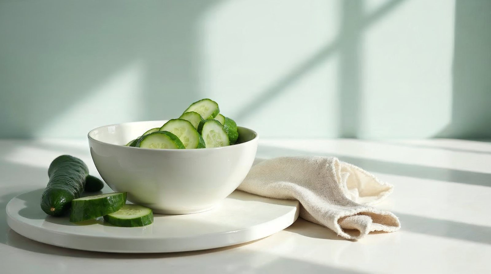

이종호 한의사 감수좋은꿈참사랑한의원 대표원장 (한의사 면허번호 19769)발행 2026-11-24 · 수정 2026-11-26
이 글의 차례
- 왜 이런 불편이 생길 수 있나요
- 왜 볼이 유독 먼저 빨개질까요
- 잠깐 붉어지는 것과 오래가는 붉음은 다른 얘기예요
- 이런 날 특히 심해질 수 있어요
- 먼저 이렇게 여쭙니다
- 스스로 한번 확인해 보세요
- 일상에서 먼저 해 볼 수 있는 것
- 마스크와 목도리도 고르는 요령이 있어요
- 뜨거운 샤워와 사우나는 어떨까요?
- 실내 환경도 같이 맞춰 보세요
- 보습제는 어떻게 고르고 바를까요?
- 출퇴근길에 할 수 있는 작은 요령
- 운동하고 들어온 날도 살펴보세요
- 먹는 것도 조금 돌아볼까요
- 손발은 찬데 얼굴만 달아오른다면
- 하나만 부탁드릴게요
- 한의원에서 함께 살필 수 있는 경우
- 이렇게 기록해 오시면 상담이 쉬워집니다
- 이런 증상은 먼저 확인이 필요합니다
겨울 찬바람을 맞고 들어온 뒤 볼이 빨갛게 달아오르고 따갑다면, 외출할 때 목도리나 마스크로 볼을 가리고 실내에서는 뜨거운 바람을 바로 쐬지 않으며 천천히 몸을 녹이는 것부터 권합니다. 예를 들어 언덕길을 걸어 상도역까지 가거나 정류장에서 버스를 오래 기다린 날 이런 불편이 생기기 쉽습니다.
진료실에서 이런 말씀을 종종 들어요. "원장님, 밖에서 들어오면 얼굴이 술 마신 사람처럼 빨개져요." 사람들 앞에서 얼굴이 달아오르면 민망하기도 하고, 따끔거려서 일에 집중도 안 되시죠.
그런데 이건 생각보다 흔한 일이에요. 겨울이면 많은 분들이 겪는 일이거든요. 그러니까 사실은 피부가 추위와 더위 사이를 오가느라 애쓰는 모습인 경우가 많아요. 먼저 그걸 알고 나면 조금 덜 걱정되실 거예요.
왜 이런 불편이 생길 수 있나요
- 찬바람을 맞으면 피부 혈관이 좁아졌다가 따뜻한 곳에서 갑자기 넓어지며 붉어질 수 있습니다.
- 겨울 공기는 건조해 피부 보호막이 약해지고 따가움을 더 느끼게 합니다.
- 뜨거운 물 세안, 잦은 각질 제거, 자극적인 화장품이 붉은 기를 더할 수 있습니다.
- 술, 매운 음식, 스트레스로도 얼굴이 쉽게 달아오르는 분이 있습니다.
왜 볼이 유독 먼저 빨개질까요
볼은 얼굴에서 바람을 가장 정면으로 맞는 자리예요. 이마는 머리카락이나 모자가 조금 가려 주고, 코와 입은 마스크로 가리는데, 볼은 그대로 드러나 있는 경우가 많잖아요. 마스크 끈이 지나가는 볼 위쪽 가장자리만 유난히 빨갛다는 분도 계세요.
게다가 볼 피부는 얇은 편이고 아래로 가는 혈관이 많은 곳이에요. 찬바람에 혈관이 꽉 오므라들었다가 따뜻한 실내에 들어오면 한꺼번에 확 열리면서, 피가 몰려 빨갛고 화끈거리게 되는 거예요.
수도꼭지를 꽉 잠갔다가 갑자기 확 틀면 물이 세게 쏟아지잖아요. 피부 혈관도 비슷해요. 그래서 저는 "천천히 틀어 주세요"라고 말씀드려요. 들어오자마자 히터 앞에 서지 말고, 현관에서 잠깐 숨을 고르면서 몸이 따뜻함에 익숙해지게 해 주는 거죠.
잠깐 붉어지는 것과 오래가는 붉음은 다른 얘기예요
두 개가 다른 얘기거든요. 찬바람을 맞고 들어와 10분, 20분 정도 붉다가 가라앉는다면 온도 차이에 피부가 반응하는 경우가 많아요. 날씨가 풀리면 덜해지는 경우도 흔하고요.
반대로 실내에 오래 있어도 붉은 기가 잘 빠지지 않거나, 볼에 실핏줄이 비쳐 보이거나, 작은 뾰루지 같은 것이 함께 올라온다면 이야기가 조금 달라요. 이럴 땐 피부 자체가 예민해져 있을 수 있어서 피부과에서 원인을 확인받는 것도 필요해요.
어느 쪽인지 알려면 붉어진 시간과 가라앉는 시간을 같이 봐야 해요. 그래서 저는 "얼마나 오래 붉으세요?"를 꼭 여쭤봐요.
따가움과 가려움도 구분해 주시면 좋아요. 따갑고 화끈거리는 건 피부가 마르고 예민해진 경우가 많고, 가렵고 오돌토돌하게 올라온다면 다른 원인을 같이 생각해 봐야 하거든요. 같은 붉음이라도 느낌에 따라 살필 방향이 달라지는 거예요.
겨울이 지나 봄이 와도 붉은 기가 그대로라면 계절 탓만은 아닐 수 있어요. 계절에 따라 어떻게 달라지는지도 기억해 두세요.
이런 날 특히 심해질 수 있어요
예를 들어 아침에 뜨거운 물로 세수하고 보습제를 바를 틈 없이 바로 나간 경우, 피부가 이미 마른 상태에서 찬바람을 맞게 돼요. 이런 날은 평소보다 따가움이 더 오래가기 쉬워요.
버스나 지하철 안 히터 바람을 얼굴 정면으로 오래 맞은 날도 그래요. 밖은 춥고 안은 덥고, 그 사이를 몇 번씩 오가다 보면 볼이 쉴 틈이 없거든요.
저녁에 따뜻한 국물과 매운 음식을 먹고, 술 한잔까지 곁들인 날도 얼굴이 더 쉽게 달아올라요. 낮의 찬바람과 저녁의 열이 하루에 겹치는 거예요.
잠이 모자라거나 일이 몰려 긴장한 날에도 얼굴이 쉽게 붉어진다는 분들이 많아요. 몸이 지치면 피부도 같이 예민해지는 경우가 흔하거든요.
먼저 이렇게 여쭙니다
- 붉어지는 때가 찬바람을 맞을 때인가요, 따뜻한 곳에 들어올 때인가요?
- 세안은 하루 몇 번, 어떤 물 온도로 하시나요?
- 최근 새로 쓰기 시작한 화장품이나 각질 제거 제품이 있나요?
- 술이나 매운 음식을 먹은 뒤에도 붉어지나요?
- 붉은 기가 얼마나 오래 이어지나요?
스스로 한번 확인해 보세요
- 실내에 들어온 뒤 30분 안에 붉은 기가 가라앉나요?
- 볼만 붉은가요, 코와 이마까지 같이 붉어지나요?
- 붉을 때 따가운가요, 가려운가요, 화끈거리기만 하나요?
- 세수하고 나면 얼굴이 당기나요?
- 손발은 차가운데 얼굴만 달아오르나요?
- 새로 바꾼 제품을 쓴 뒤부터 심해졌나요?
몇 가지에 해당하는지 표시만 해 오셔도 진료실에서 이야기가 훨씬 빨라져요.

일상에서 먼저 해 볼 수 있는 것
- 외출할 때 목도리나 마스크로 볼을 가리기
- 실내에 들어와 바로 뜨거운 바람을 쐬지 말고 천천히 몸 녹이기
- 미지근한 물로 세안하고 문지르지 않기
- 자극이 적은 보습제를 외출 전후에 바르기
- 실내가 건조하면 가습기나 젖은 수건으로 습도 맞추기
세수할 때도 한번 보세요. 수건으로 박박 문지르면 이미 예민해진 볼에 또 한 번 자극이 가요. 톡톡 눌러서 물기만 걷어 내고, 마르기 전에 보습제를 얇게 펴 바르는 정도면 충분해요.
화장품은 새로 여러 개를 한꺼번에 바꾸지 마세요. 따가움이 생겼을 때 무엇 때문인지 알기 어려워지거든요. 바꾸더라도 한 번에 하나씩, 며칠 써 보고 괜찮으면 다음 것을 더하는 게 좋아요.
마스크와 목도리도 고르는 요령이 있어요
볼을 가리라고 말씀드리면 두꺼운 털목도리를 칭칭 감고 다니시는 분들이 있어요. 그런데 거친 털이 볼에 계속 닿으면 그것도 자극이 되거든요. 볼에 닿는 부분은 부드러운 면이나 얇은 천이 좋아요.
마스크도 너무 꽉 끼면 안쪽에 숨이 차서 오히려 볼이 축축하고 화끈거릴 수 있어요. 숨이 편하게 드나드는 크기로 고르시고, 젖으면 한 장 더 챙겨 바꿔 주세요. 끈이 볼을 세게 누르지 않는지도 거울로 한번 확인해 보세요.
모자 챙이 조금 있는 것을 쓰면 바람과 햇빛을 같이 덜 맞아요. 가릴 것을 여러 개 하나씩 겹쳐서 볼을 감싸 준다고 생각하시면 돼요.
뜨거운 샤워와 사우나는 어떨까요?
추운 날엔 뜨거운 물에 몸을 푹 담그고 싶으시죠. 저도 그 마음 잘 알아요. 그런데 얼굴이 쉽게 달아오르는 분들은 뜨거운 물과 사우나의 열기가 볼을 한 번 더 붉게 만들 수 있어요.
몸은 따뜻하게 씻으시되 얼굴은 마지막에 미지근한 물로 따로 헹궈 주세요. 샤워기 물줄기를 얼굴에 바로 세게 맞는 것도 줄여 보시고요.
사우나를 좋아하신다면 끊으시라는 게 아니에요. 하고 싶은 걸 못 하게 하는 게 아니라 시간을 조금 짧게, 얼굴에 젖은 수건을 얹고 하시는 식으로 같이 방법을 찾아보자는 거예요.
실내 환경도 같이 맞춰 보세요
겨울 실내는 난방 때문에 생각보다 많이 건조해요. 피부의 물기가 계속 빠져나가면 보호막이 얇아지고, 그 상태로 밖에 나가면 찬바람에 더 따가워지거든요.
가습기가 없어도 괜찮아요. 젖은 수건이나 빨래를 방에 널어 두는 것만으로도 도움이 될 수 있어요. 난방 온도를 너무 높이지 않고, 히터 바람이 얼굴로 바로 오지 않게 방향을 돌려 두는 것도 좋아요.
사무실에서 하루 종일 일하신다면 책상 위 작은 선풍기형 히터를 얼굴 쪽으로 두지 않았는지 한번 보세요. 발 쪽으로 돌려 두면 손발은 따뜻하고 얼굴은 덜 달아오를 수 있어요.
보습제는 어떻게 고르고 바를까요?
보습제는 향이 강하거나 시원한 느낌을 주는 성분이 들어간 것보다, 향이 적고 순한 제품이 무난해요. 바르고 나서 따끔거린다면 그 제품은 지금 내 피부에 맞지 않는 거예요.
바를 때는 문지르지 말고 손바닥으로 감싸듯 눌러 주세요. 외출 직전과 집에 들어와 세수한 뒤, 하루 두 번만 잊지 않으셔도 충분해요. 많이, 자주보다 꾸준히가 더 중요한 거예요.
출퇴근길에 할 수 있는 작은 요령
정류장에서 버스를 오래 기다려야 한다면 바람을 등지고 서 보세요. 같은 자리에서도 얼굴 방향만 바꿔도 볼이 맞는 바람이 확 줄어요. 건물 벽이나 가림막 옆에 서는 것도 방법이고요.
언덕길을 걸어 올라갈 때는 숨이 차서 입으로 크게 들이마시게 되잖아요. 그러면 마스크 안이 축축해지고 볼이 화끈거리기 쉬워요. 최대한 천천히, 숨이 편할 만큼만 걸어 주세요.
회사나 집에 도착하면 따뜻한 음료를 바로 들이켜기보다 몇 분 앉아서 숨을 고른 뒤 드셔도 늦지 않아요. 작은 순서 하나 바꾸는 것뿐이지만 볼이 받는 충격은 꽤 달라지거든요.
운동하고 들어온 날도 살펴보세요
겨울에 밖에서 뛰거나 등산을 하고 들어오면 얼굴이 유난히 오래 붉다는 분들이 있어요. 운동으로 몸에 열이 오른 데다 찬바람까지 맞았으니, 볼 혈관이 두 번 바빠지는 거예요.
운동하지 말라는 게 아니에요. 다만 숨이 턱까지 차게 세게 하기보다, 이야기를 나눌 수 있을 정도로 천천히 오래 하시는 게 얼굴에도 몸에도 부담이 덜해요. 끝나고 바로 뜨거운 물로 씻기보다 땀을 조금 식힌 뒤 미지근하게 씻어 주세요.
먹는 것도 조금 돌아볼까요
얼굴이 쉽게 달아오르는 분들은 저녁 음식도 한번 같이 봐요. 맵고 뜨거운 국물, 술, 진한 커피가 하루에 몰리면 낮에 찬바람을 맞았던 볼이 저녁에 다시 화끈거리기 쉽거든요.
드시지 말라는 게 아니라 한 번에 몰지 말자는 거예요. 매운 음식을 드신 날은 술을 쉬고, 술 약속이 있는 날은 국물을 조금 덜 뜨겁게 드시는 식으로요. 그날 무엇을 먹었는지 메모해 두시면 내 얼굴이 무엇에 민감한지 보이기 시작해요.
물을 자주 조금씩 드시는 것도 좋아요. 겨울에는 목이 덜 마르다 보니 물을 잘 안 드시게 되는데, 몸이 마르면 피부도 같이 마르는 경우가 많거든요.
손발은 찬데 얼굴만 달아오른다면
진료실에서 자주 듣는 말이 "손발은 얼음장인데 얼굴은 화끈거려요"예요. 몸의 열이 골고루 퍼지지 못하고 위로만 몰리는 모습으로 볼 수 있거든요. 한의학에서는 이런 흐름을 몸 전체의 순환과 함께 살펴요.
이런 분들은 대개 아랫배와 발을 따뜻하게 하는 것부터 시작해요. 양말을 챙겨 신고, 오래 앉아 있을 때는 한 번씩 일어나 걸어 주는 거예요. 아랫도리가 따뜻해야 위로 몰린 열도 덜 하다는 분들이 많아요.
그러니까 볼만 보지 말고 몸 전체를 같이 봐야 하는 거예요. 저는 얼굴을 고치려는 게 아니라 얼굴이 달아오르게 만드는 몸을 같이 돌보려고 하는 거예요.
하나만 부탁드릴게요
숙제를 많이 드리면 지키기 어렵더라고요. 그래서 하나만 부탁드려요. 밖에서 들어오면 바로 히터 앞에 서지 말고, 현관에서 잠깐 숨을 고르고 들어와 주세요. 딴 건 하시던 대로 편하게 하셔도 돼요.
몸의 열과 순환을 살피는 건 제가 맡을게요. 그렇게 한두 주 지내 보시고 붉은 기가 얼마나 오래가는지 같이 보면 돼요.
작은 습관 하나라도 매일 하시면 그게 쌓이는 거예요. 하루 이틀 잊으셔도 괜찮아요. 다시 하시면 되거든요. 바쁘게 사시다 보면 원래 그런 거예요.

한의원에서 함께 살필 수 있는 경우
- 겨울마다 얼굴 붉어짐과 따가움이 반복되는 경우 피부 상태와 함께 몸의 열 경향을 살핍니다.
- 손발은 찬데 얼굴만 달아오르는 경우 몸의 순환과 생활 리듬을 함께 살핍니다.
- 잠이 부족하거나 스트레스가 많을 때 더 심한 경우 함께 여쭙니다.
좋은꿈참사랑한의원에서는 모든 분께 맥부터 짚으며 붉어지는 때와 세안·화장품 습관을 여쭙고, 가져오신 사진이 있으면 함께 보며 혀의 상태와 몸의 열 경향, 순환을 살핍니다. 필요하다고 판단될 때 침이나 한약 상담 등을 정하고, 계절에 맞는 생활 관리를 함께 정리합니다.
처음 오시면 맥을 먼저 짚고, 그다음 언제 붉어지고 얼마나 오래가는지, 세안과 화장품은 어떻게 쓰시는지 차근차근 여쭤봐요. 찍어 오신 사진은 이때 같이 보고, 혀의 색과 모양도 함께 살펴요.
얼굴 이야기만 하지 않고 잠은 어떤지, 소화는 괜찮은지, 생리 주기는 규칙적인지도 함께 여쭤봐요. 피부는 몸 전체 컨디션을 따라가는 경우가 많거든요.
지금 바르거나 드시는 약이 있다면 꼭 알려 주세요. 한약은 드시는 약을 먼저 확인한 뒤 정하고, 처방받은 약은 처방한 의사와 상의 없이 줄이거나 끊지 않습니다. 임신 중이시거나 가능성이 있다면 먼저 말씀해 주시고, 산부인과와도 상의해 주세요.
치료를 시작하면 보통 한 달 정도 지내 보면서 붉은 기가 가라앉는 시간이 어떻게 달라지는지 같이 보고 다음을 정해요. 사람마다 반응이 다르니까 처음부터 길게 정해 두지 않는 거예요.

이렇게 기록해 오시면 상담이 쉬워집니다
- 붉어진 날의 사진(외출 전후)
- 세안 횟수와 물 온도
- 최근 바꾼 화장품이나 각질 제거 제품
- 술이나 매운 음식을 먹은 뒤의 변화
사진은 같은 장소, 같은 조명에서 찍으시면 비교하기가 쉬워요. 예를 들어 현관 거울 앞에서 들어오자마자 한 장, 20분 뒤에 한 장 찍는 식이에요. 진료 날엔 붉은 기가 가라앉아 있는 경우가 많아서 이런 사진이 큰 도움이 돼요.
휴대폰 메모에 "정류장 15분, 들어와서 30분 붉음, 따가움 5점"처럼 한 줄씩만 남겨 두셔도 충분해요. 일주일만 모아도 어떤 날 심한지 모양이 보이기 시작하거든요.
이런 증상은 먼저 확인이 필요합니다
- 볼이 하얗거나 회색으로 변하거나, 몸을 녹인 뒤에도 감각이 둔한 경우(동상 의심)
- 붉은 기와 함께 물집이나 진물이 생긴 경우
이런 신호가 있으면 한의원보다 가까운 병원이나 응급실을 먼저 찾으세요.

여쭙는 것
- 붉어지는 때가 찬바람을 맞을 때인가요, 따뜻한 곳에 들어올 때인가요?
- 세안은 하루 몇 번, 어떤 물 온도로 하시나요?
- 최근 새로 쓰기 시작한 화장품이나 각질 제거 제품이 있나요?
생활에서 해 볼 것
- 외출할 때 목도리나 마스크로 볼을 가리기
- 실내에 들어와 바로 뜨거운 바람을 쐬지 말고 천천히 몸 녹이기
- 미지근한 물로 세안하고 문지르지 않기
한의원에서 함께 살필 것
- 겨울마다 얼굴 붉어짐과 따가움이 반복되는 경우 피부 상태와 함께 몸의 열 경향을 살…
- 손발은 찬데 얼굴만 달아오르는 경우 몸의 순환과 생활 리듬을 함께 살핍니다.
- 잠이 부족하거나 스트레스가 많을 때 더 심한 경우 함께 여쭙니다.
먼저 확인이 필요한 신호
- 볼이 하얗거나 회색으로 변하거나, 몸을 녹인 뒤에도 감각이 둔한 경우(동상 의심)
- 붉은 기와 함께 물집이나 진물이 생긴 경우
한눈에 보는 표
| 구분 | 핵심 |
|---|---|
| 여쭙는 것 | 붉어지는 때가 찬바람을 맞을 때인가요, 따뜻한 곳에 들어올 때인가요? 세안은 하루 몇 번, 어떤 물 온도로 하시나요? |
| 생활에서 해 볼 것 | 외출할 때 목도리나 마스크로 볼을 가리기 실내에 들어와 바로 뜨거운 바람을 쐬지 말고 천천히 몸 녹이기 |
| 한의원에서 함께 살필 것 | 겨울마다 얼굴 붉어짐과 따가움이 반복되는 경우 피부 상태와 함께 몸의 열 경향을 살핍니다. 손발은 찬데 얼굴만 달아오르는 경우 몸의 순환과 생활 리듬을 함께 살핍니다. |
| 먼저 확인이 필요한 신호 | 볼이 하얗거나 회색으로 변하거나, 몸을 녹인 뒤에도 감각이 둔한 경우(동상 의심) 붉은 기와 함께 물집이나 진물이 생긴 경우 |
자주 묻는 질문
각질 제거를 하면 덜 붉어지나요?
겨울에는 오히려 자극이 될 수 있어 횟수를 줄이는 편을 권합니다.
화장으로 가리면 더 심해지나요?
제품에 따라 다릅니다. 바른 뒤 따갑거나 붉어지면 쓰지 않는 것이 좋습니다.
겨울에도 자외선 차단제를 발라야 하나요?
겨울 햇빛도 피부에 자극이 될 수 있어, 자극이 적은 제품을 고르시길 권합니다. 바른 뒤 따갑다면 쓰지 않는 것이 좋습니다.
붉은 기가 오래가면 어디로 가야 하나요?
몇 주 넘게 이어진다면 피부과에서 원인을 확인해 보시길 권합니다. 붉어진 날의 사진을 모아 두시면 설명하기가 쉬워집니다.
붉어진 볼에 찬 것을 대면 도움이 되나요?
얼음을 바로 대면 다시 자극이 될 수 있습니다. 미지근한 물에 적신 수건을 잠깐 얹는 정도로 천천히 식혀 주세요.
좋은꿈참사랑한의원은 재진 때 지난번 이야기부터 이어서 여쭙니다. 진료시간과 예약은 오시는 길에서 확인하세요.
어디서 상담받을 수 있나요?
좋은꿈참사랑한의원은 서울 동작구 만양로2길 2 신성빌딩 3층·5층(서울 동작구 상도동, 7호선 상도역 3번 출구 근처)에 있습니다. 한의사 3명(이종호 대표원장, 조영기 수석진료원장, 정원영 진료원장)이 진료합니다. 진료시간은 평일 09:30~20:00(점심 13:00~14:00), 토·일·공휴일 09:30~15:00이며, 방문 전 전화로 확인을 권합니다. 예약은 네이버 예약, 카카오톡 상담, 전화 02-815-7510로 받습니다.
이 글은 일반적인 건강 정보이며 개인의 진단이나 치료를 대신하지 않습니다. 증상이 있거나 복용 중인 약이 있다면 진료를 통해 확인하세요. 치료 효과는 개인마다 다를 수 있습니다.
작성 기준: 일반적으로 알려져 있는 건강 정보를 참고해 정리했습니다(대표원장 감수). 증상 기록은 1~2주 동안 하루 1회, 비슷한 시간에 적어 오시면 지난 상태와 비교하기 쉽습니다.